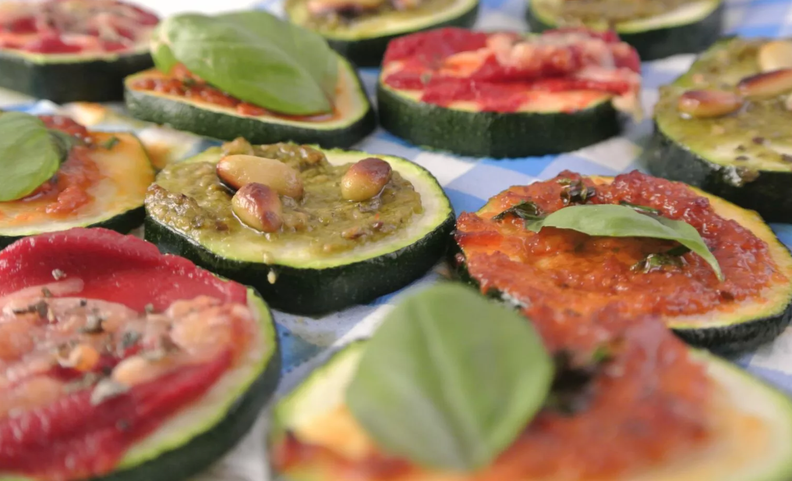

Mini Pizzas

Description
These delicious mini zucchini pizzas with different toppings are easily adaptable to your (or your children's) tastes.
Top them with pesto, grated cheese, salami, or red onions.
They make a perfect snack, and can be a lifesaver when you have unexpected guests!
Ingredients
- One zucchini for approximately 20 pizzas
- Red and/or green pesto
- Grated cheese
- Fresh Basil
- Tomato paste
- Pine nuts
- ...
Steps
- Preheat the oven on the grill setting
- Cut the zucchini into slices
- Garnish each zucchini slice with the toppings of your choice
- Put the slices into the oven for 3-5 minutes
- Serve on a large plate
Home